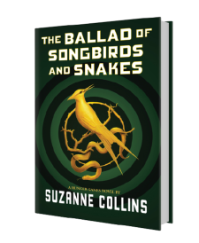

Latest Book
It is the morning of the reaping that will kick off the tenth annual Hunger Games. In the Capitol, eighteen-year-old Coriolanus Snow is preparing for his one shot at glory as a mentor in the Games.The odds are against him. He’s been given the humiliating assignment of mentoring the female tribute from District 12, the lowest of the low. Their fates are now completely intertwined — every choice Coriolanus makes could lead to favor or failure, triumph or ruin. Inside the arena, it will be a fight to the death. Outside the arena, Coriolanus starts to feel for his doomed tribute . . . and must weigh his need to follow the rules against his desire to survive no matter what it takes.
Welcome!
Hi! Thanks for visiting my website. Here’s a picture of me with a rat in Central Park. If you’ve read my fantasy series, The Underland Chronicles, you will have a clue as to why I chose this photo. If not, you may want to click around and find out a little more about my books. Or visit the Scholastic website for cool games and info!